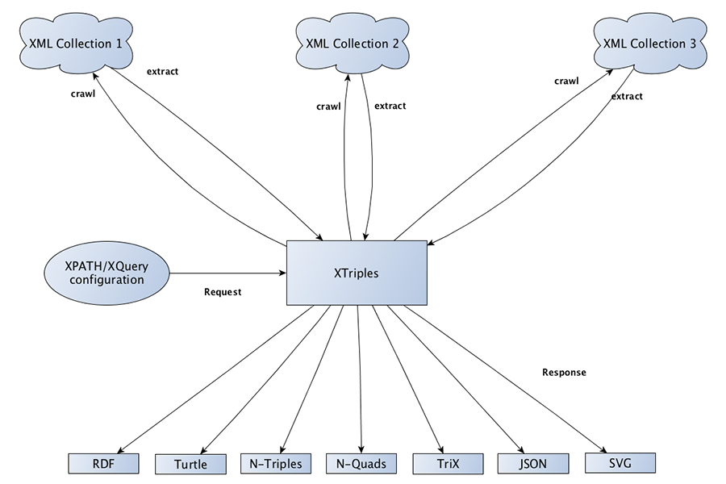

DHd2016 | Leipzig
Geisteswissenschaftliche Fachdatenrepositorien im Semantic Web
Modellierung, Vernetzung, Visualisierung
Torsten Schrade (Akademie Mainz) |
 @digicademy |
@digicademy |
 digicademy
digicademy
Gliederung
- Geisteswissenschaftliche Repositorien
- Semantische Fragestellungen
- Implizite und explizite Semantik (XML vs. RDF)
- Beispielmodellierung (Briefeditionen)
- RDF aus XML: Der XTriples Webservice
- Vernetzungs- und Visualisierungsbeispiele
01
Geisteswissenschaftliche Fachdatenrepositorien
Corpus Vitrearum Medii Aevi

Corpus Vitrearum Medii Aevi
correspSearch
correspSearch
02
Semantische Fragestellungen
Beispiele
- CVMA:
- Welche ikonographisch ähnlichen Ressourcen gibt es?
- Treten bestimmte Ikonographien nur zu bestimmten Zeiten auf?
- Briefeditionen:
- Wer korrespondiert mit wem?
- Wo war Person X im Jahr Y?
- Epidat:
- Welche Familienbeziehungen lassen sich auf einem Friedhof nachweisen?
- Gibt es Muster im Auftreten bestimmter Grabsteinsymbole auf bestimmten Friedhöfen?
03
Implizite und explizite Semantik
Implizite Semantik (TEI-XML)
<correspDesc key="686" cs:source="#SOE20">
<correspAction type="sent">
<persName ref="http://d-nb.info/gnd/118540238">
Johann Wolfgang von Goethe
</persName>
<placeName ref="http://www.geonames.org/2812482">
Weimar
</placeName>
<date when="1793-12-05">5.12.1793</date>
</correspAction>
[...]
</correspDesc>
- Subjekt
- Prädikat
- Objekt
Explizite Semantik (RDF)
Goethe is a Person ;
sends Letter .
Letter dates to 1793 ;
sent from Weimar .
Weimar is a City ;
has latitude 11.32 ;
has longitude 50.98 .
- Subjekt
- Prädikat
- Object
04
Beispielmodellierung (Briefeditionen)
05
RDF aus XML: Der XTriples Webservice
Website und Dokumentation
Ziele des Webservice
- Gewinnung von RDF Statements aus beliebigem XML
- Basierend auf einer einfachen Konfiguration
- Einbeziehung beliebiger weiterer Ressourcen und Sammlungen
- Zahlreiche RDF-Serialisierungen als Rückgabeformate
- RESTful - Kommunikation vollständig über HTTP
Funktionsweise

Extraktion von Aussagemustern
AUSSAGEMUSTER
<statement>
<subject>//tei:correspAction[@type='sent']/tei:persName/@ref</subject>
<predicate prefix="rdf">type</predicate>
<object type="uri" prefix="cd">Sender</object>
</statement>
________________________________________________________________________
ERGEBNIS
gndo:118540238 rdf:type cd:Sender .
06
Vernetzungs- und Visualisierungsbeispiele
CVMA Beispieldaten (fiktiv)
<collection>
<resource>
<image>
<column name="dc_identifier">2622</column>
<column name="dc_title">Hl. Michael als Drachentöter</column>
<column name="cvma_age_determination_start">1210-01-01</column>
<column name="cvma_iconclass_notation">11G31</column>
<column name="cvma_iconclass_description">der Erzengel Michael [...]</column>
<column name="geo">49.49710000000000,11.38981111111100</column>
<column name="iptc4xmpext_province_state">Bayern</column>
<column name="iptc4xmpext_city">Henfenfeld</column>
<column name="iptc4xmpext_sublocation">Pfarrkirche</column>
<column name="link">http://id.corpusvitrearum.de/images/2622</column>
</image>
</resource>
</collection>
CVMA - Stufe 01
CIDOC und SKOS Klassen, dcterms
XTriples: Konfiguration | Live ausführen: SVG | RDF/XML | Turtle
CVMA - Stufe 02
Verbindung zu Iconclass
XTriples: Konfiguration | Live ausführen: SVG | RDF/XML | Turtle
CVMA - Stufe 03
Ikonographisch ähnliche Ressourcen via Europeana
XTriples: Konfiguration | Live ausführen: SVG | RDF/XML | Turtle
CVMA - Stufe 04
Multilinguale ikonographische Labels via Iconclass
XTriples: Konfiguration | Live ausführen: SVG | RDF/XML | Turtle
correspSearch: Wer schreibt wem?
XTriples: Konfiguration | Live ausführen: SVG | RDF/XML | Turtle
correspSearch: Korrespondenznetzwerke
Epidat: Familienbeziehungen auf dem jüdischen Friedhof Ahaus
Epidat: Jüdische Grabsteinsymbole pro Friedhof
F I N I S
Publikum war aufmerksam .
Referent dankt Publikum .
Stuff used
- Impress.js (Präsentation)
- D3SPARQL (Visualisierungstool für RDF)
- Sgvizler (Visualisierungstool für RDF)
- greuler (Graph Modellierung/Visualisierung)
- hightlight.js (Syntax Highlighting)
- CodeMirror (SPARQL Syntax Highlighting)
Präsentation & Daten: GitHub
Lizenz: CC-BY 4.0, Torsten Schrade